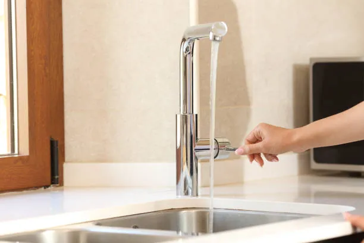
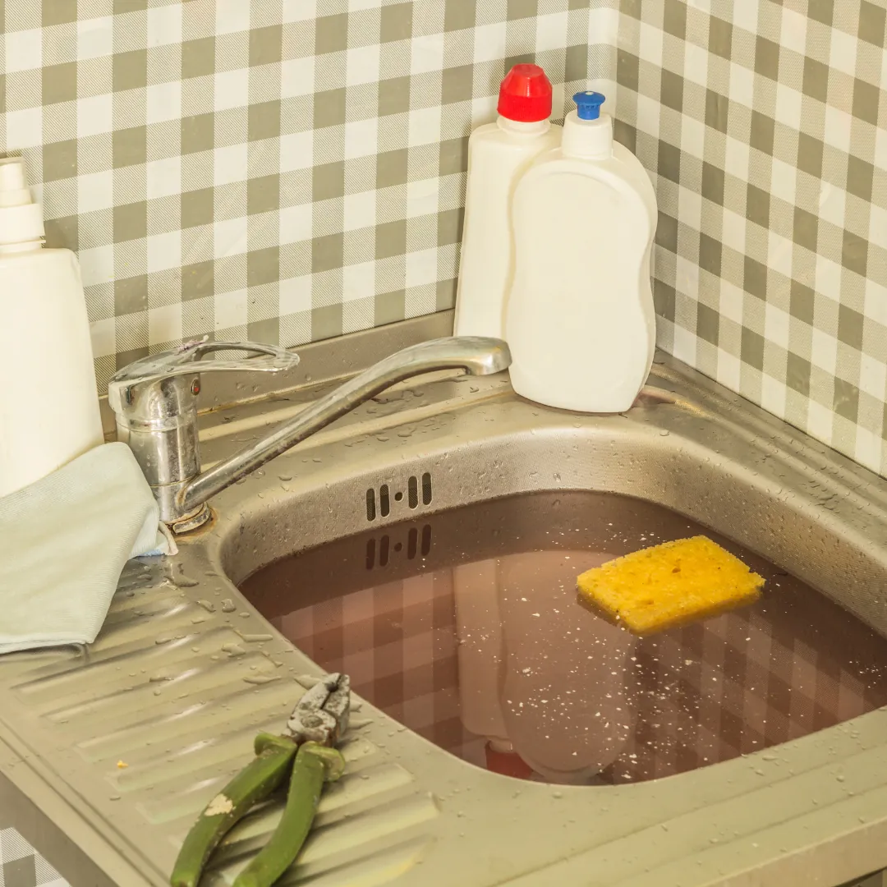
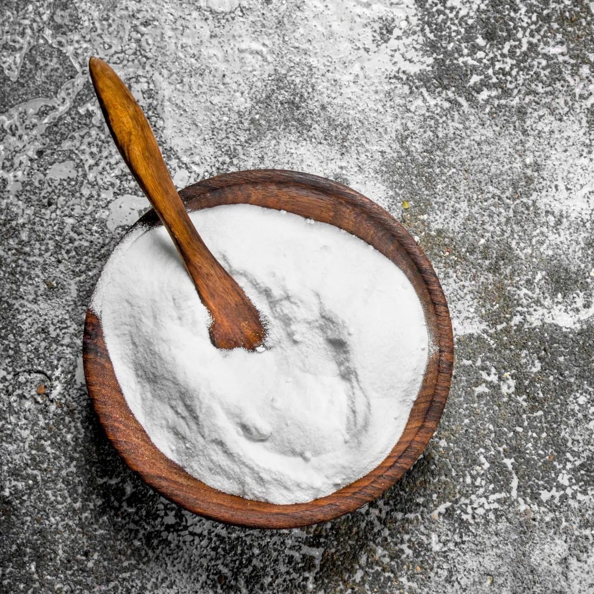

Vous remarquez que l’eau de l’évier ou de la baignoire prend du temps à s’écouler ? Il y a certainement un bouchon dans vos tuyaux.
Bien que déboucher les canalisations de votre maison n’a peut-être plus de secrets pour vous, nous voulons vous faire part de solutions plus écologiques pour celles-ci.
Dans notre précédent article “comment bien entretenir son WC”, nous vous partageons nos astuces pour entretenir sa chasse d’eau et éviter les pannes sans utiliser de produits chimiques.
Aujourd’hui nous allons vous présenter LA solution efficace et écologique pour déboucher toutes vos canalisations et à moindre coût.

La solution classique
Quand nous remarquons un problème de canalisations dans l’évier ou dans la baignoire, la première pensée est d’utiliser les produits chimiques prêt à l’emploi. On les trouve principalement dans les rayons bricolages des grandes surfaces.
Bien que ceux-ci soient efficaces, beaucoup d’inconvénients accompagnent leur utilisation.
Le Destop est connu pour être efficace pour dissoudre les bouchons de graisses. Cependant, celui-ci est composé de nombreux produits chimiques agressifs pour la peau et à l’inhalation. De plus, ce produit pollue énormément les rivières. Et nous ne vous parlerons pas du prix…
Si vous avez utilisez du Destop avant que le plombier soit intervenu, il sera dangereux pour lui de déboucher vos canalisations.
L’acide chlorhydrique est également un produit beaucoup utilisé pour déboucher les tuyaux. Malheureusement celui-ci est mauvais pour la santé et l’environnement.
Et pour finir, la soude caustique est un produit connu pour être efficace pour dissoudre les bouchons mais est très corrosive pour la peau, les yeux ainsi que les voies respiratoires et digestives. Vous devez manipuler la soude avec des gants, des lunettes de protection et protéger intégralement votre visage. Ce n’est pas très rassurant…
C’est pour toutes ces raisons que nous voulons vous proposer LA solution écologique qui changera votre quotidien.
La solution écologique
Malgré nos vieilles habitudes à utiliser des produits chimiques pour tout car ils sont efficaces, nous voulons nous tourner vers des produits écologiques. Préserver l’environnement est quelque chose qui nous concerne tous et voici LA solution écologique qui va changer votre vie… ou presque.
Le vinaigre blanc n’est pas efficace que pour détartrer sa chasse d’eau. Il peut être aussi utilisé pour déboucher les canalisations de votre salle de bain et de votre cuisine.
Le bicarbonate de soude associé au vinaigre blanc est la solution la plus efficace pour déboucher votre lavabo sans l’usage de produits chimiques.
Ne vous inquiétez pas, ce n’est pas compliqué à faire. Voici les étapes à suivre :
- Verser un bol de bicarbonate de soude dans vos canalisations
- Pendant ce temps, faire chauffer un verre de vinaigre blanc et le verser dans les tuyaux.
- Recouvrir la bonde.
Lorsque vous entendez le pétillement de la réaction chimique du bicarbonate de soude et du vinaigre blanc, le bouchon est en train de se dissoudre.
Vous pouvez également utiliser cette méthode pour déboucher vos toilettes et éviter un dégât des eaux.
Et voilà, votre évier est débouché ! Et en plus de ça, vous pouvez dire adieu aux mauvaises odeurs des tuyaux.
Toutefois, si vous n’avez pas de vinaigre blanc, vous pouvez également utiliser du bicarbonate de soude et de l’eau chaude. Ce mélange est moins efficace que le précédent mais si vous êtes face à un petit bouchon, cela fera très bien l’affaire.
Le mode d’emploi est tout aussi simple : verser le bicarbonate de soude dans les canalisations puis l’eau bouillante.

Une autre astuce
Pour prévenir des bouchons et entretenir vos canalisations, nous vous conseillons de mettre une petite cuillère de marc de café dans votre douche, baignoire et lavabo. Les petits grains de café vont empêcher la formation de bouchon de graisse car ils empêchent celle-ci de se coller aux parois du tuyau.
En plus de leur prix plus que accessible, tous les produits énoncés sont facilement trouvables dans vos placards, ou en grande surface.
Conclusion
La solution écologique est celle que nous vous conseillons les yeux fermés. En plus de ne pas polluer l’environnement, elle n’a aucun impact négatif sur votre santé et est facile à intégrer dans votre routine.
Notre objectif est de vous proposer des solutions alternatives présentant beaucoup plus d’avantages que celles que vous pouvez connaître.
Cependant, si le problème de canalisations persiste, nous vous recommandons de faire appel à un professionnel pour vos travaux. Celui-ci utilisera des outils professionnels tels qu’un furet ou si besoin un karcher.
Grâce à Plateo, il est devenu plus facile de trouver un artisan de confiance rapidement.
Alors, pour trouver un plombier pour déboucher vos canalisations, vous pouvez faire votre demande de devis en ligne gratuitement sur www.plateo.fr.